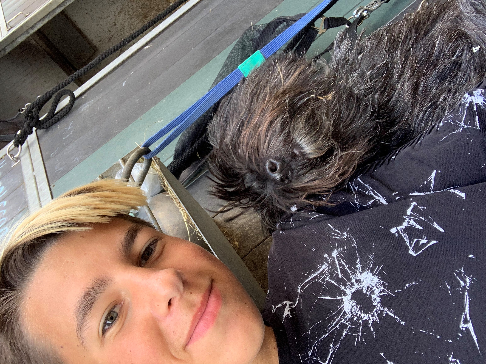

projecten
de afgelopen maanden heb ik al een paar projecten gedaan. waaronder het maken van deze website. elke keer dat ik een opdracht moest doen was die anders dan de andere.


de afgelopen maanden heb ik al een paar projecten gedaan. waaronder het maken van deze website. elke keer dat ik een opdracht moest doen was die anders dan de andere.